ثانيها ورابعها: كما هما c4-s6 · c4-s12
ما كان
المطلوب عدم فرض تجميد عام على كل شرح يذكر الله.ما تغيّر
في c4-s6 تنتهي حركة الكاميرا عند 30 ويُكتب المطلب عند «اتباعه» (70) بعد «الله» (56). وفي c4-s12 تنتهي عند 60 ويُكتب عند «اجتنابه» (109) بعد «الله» (95). التكوين ساكن حول ذكر الله دون تجميد للمشهد كله.اختبار الهاتف / ملاحظة
لا تغيير.c4-s6
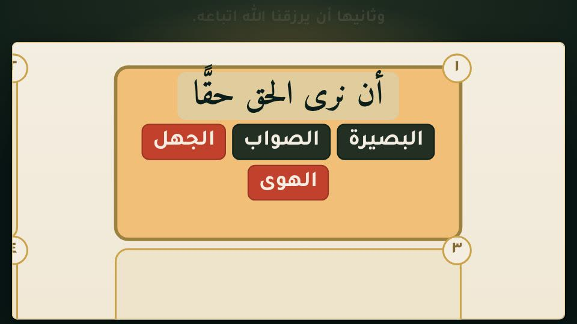
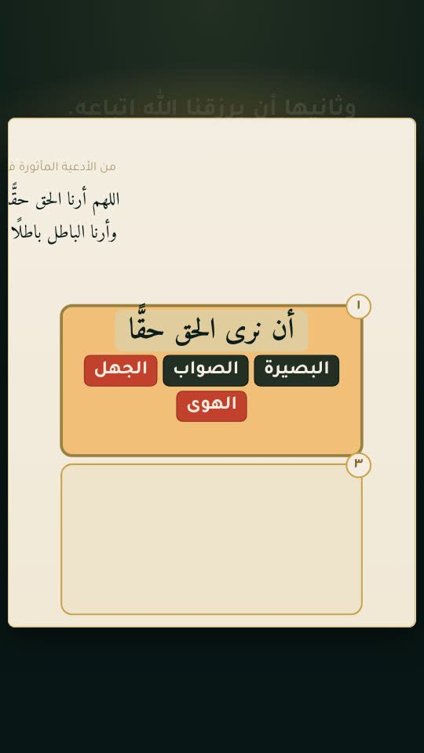
إطار 4 · 0.1 ث
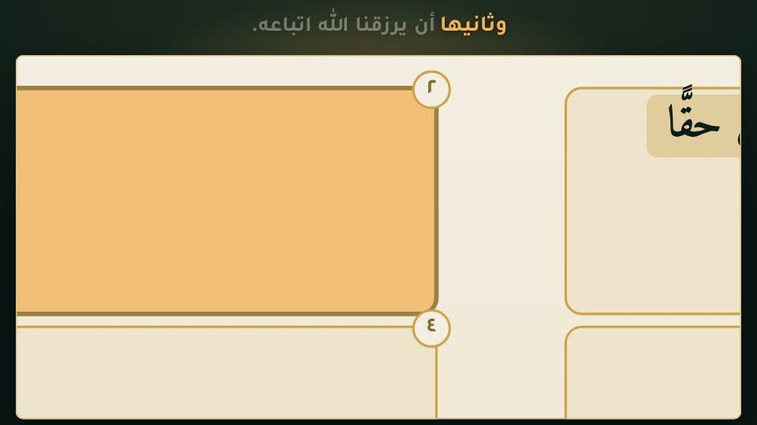

إطار 20 · 0.7 ث
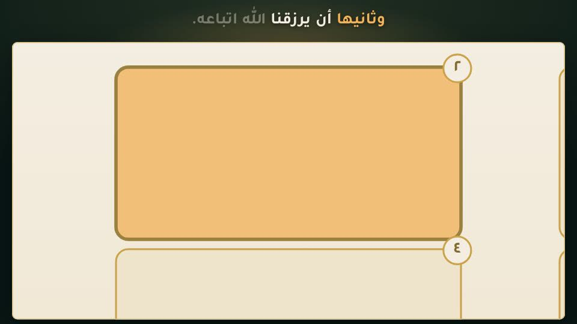

إطار 40 · 1.3 ث
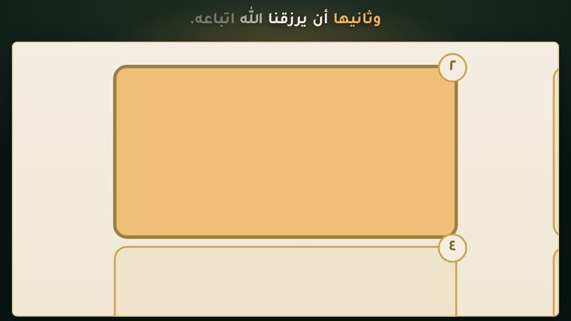
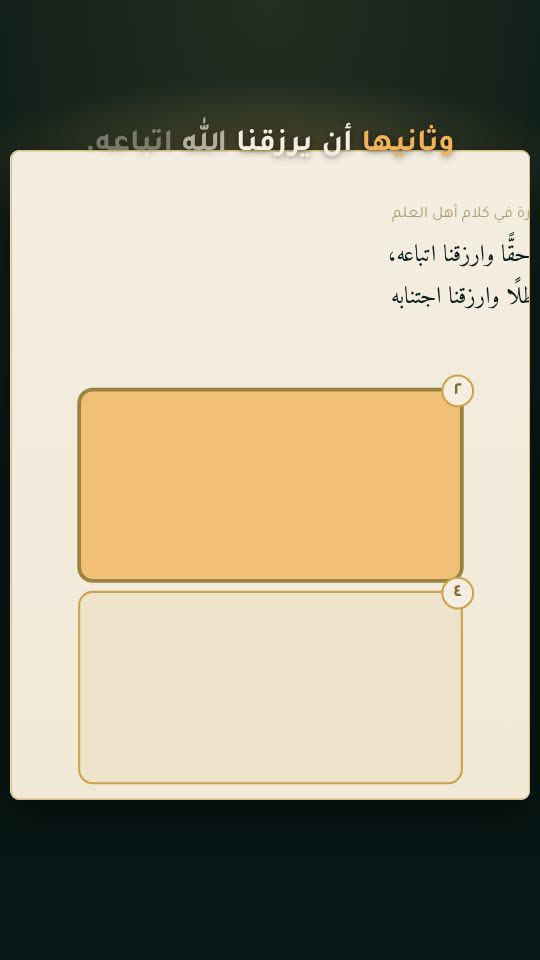
إطار 56 · 1.9 ث


إطار 75 · 2.5 ث

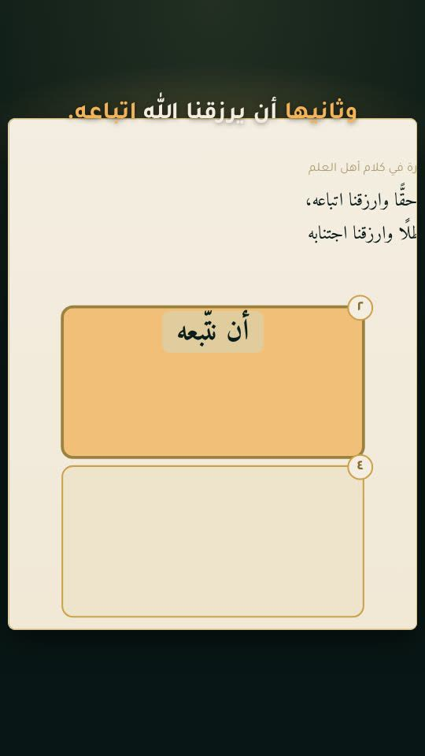
إطار 95 · 3.2 ث
c4-s12
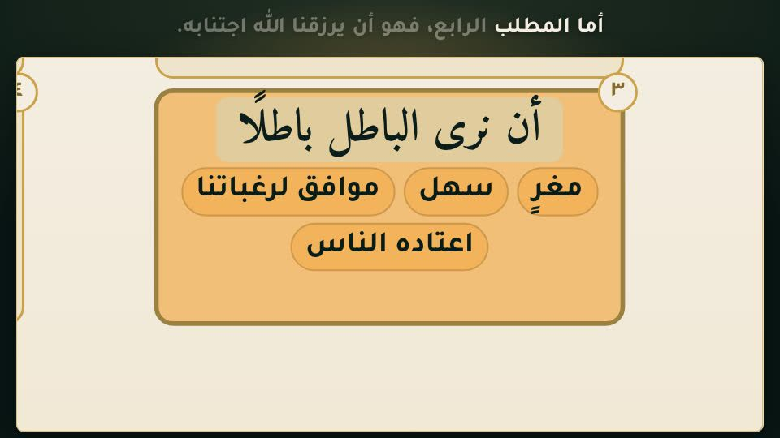

إطار 20 · 0.7 ث
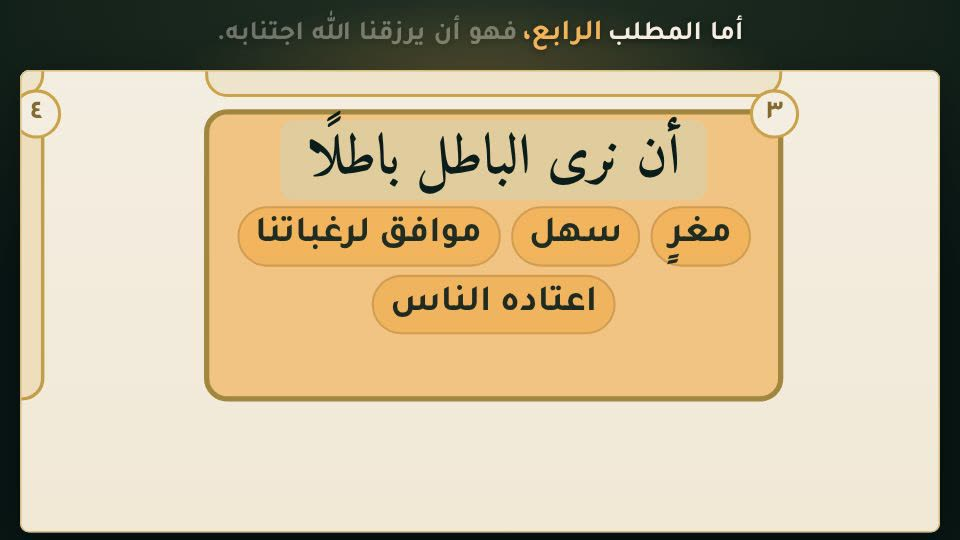

إطار 40 · 1.3 ث

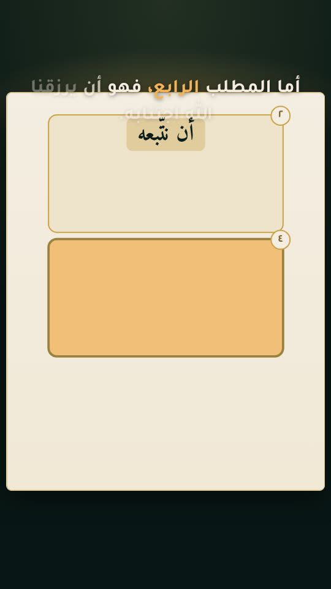
إطار 70 · 2.3 ث
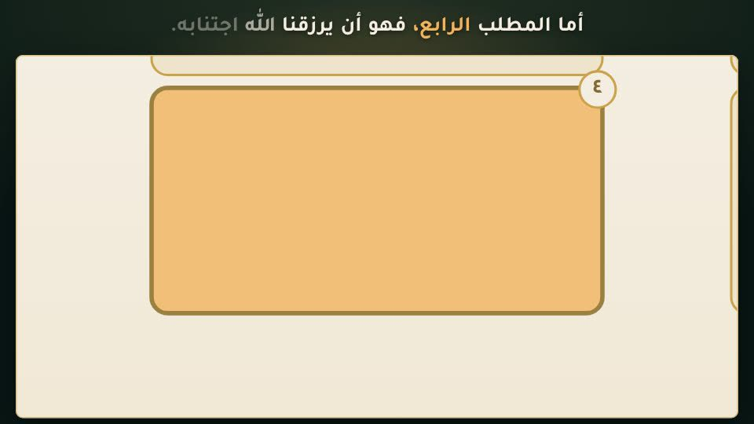

إطار 95 · 3.2 ث


إطار 115 · 3.8 ث
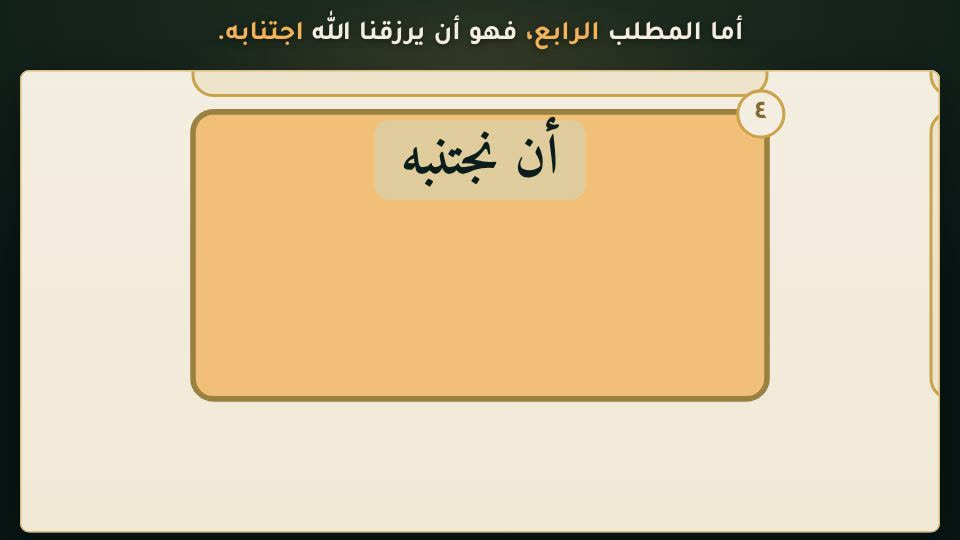

إطار 140 · 4.7 ث